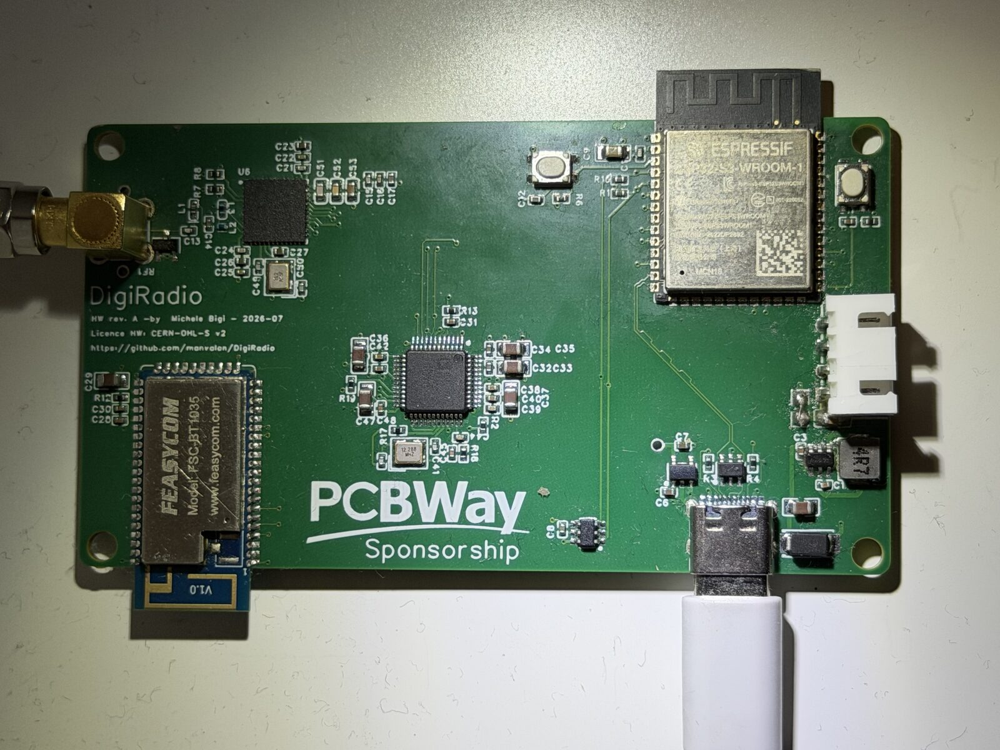

How DigiRadio was built
How the radio came to be, from the first board to firmware 0.13, and how the second version was reviewed with BoardLab before going to fabrication.
Where it started
I wanted a DAB+ and FM radio that sent its audio to my Bluetooth speaker without going through a phone and without losing quality. I couldn't find one, so I designed it.
The core idea never changed: a fully digital audio path, I²S at 48 kHz and 24 bits, from the tuner to the Bluetooth link. In the middle there's a DSP for equalisation, source mixing and presets. An ESP32-S3 runs everything and talks to an iPhone app.
Board v1

The first board is a 6-layer, 50 × 90 mm design with four main chips: the Silicon Labs Si4684 tuner, the Analog Devices ADAU1701 DSP, the FSC-BT1035 Bluetooth module with aptX Adaptive, and the ESP32-S3.
A QFN tuner, an LQFP DSP, two 2.4 GHz modules and a USB-C connector on 6 impedance-controlled layers can't be assembled by hand. The board was fabricated and assembled by PCBWay, who sponsored part of the cost. The only part they didn't stock was the BT1035, which I soldered myself.
The first weeks were spent bringing it up. Two examples:
- The Bluetooth I²S format. The DSP sends 32-bit frames per channel, and the BT1035 had to be configured to receive them that way. A wrong setting shows up straight away as noise or silence.
- The Si4684 crystal. The 19.2 MHz crystal ran a few ppm low. Instead of changing parts, the firmware calibrates it: it measures the offset on FM stations, corrects it and stores the value in EEPROM. The residual error is now about 3 ppm.
The firmware, one version at a time
The firmware runs on the ESP32-S3, is written with ESP-IDF in C++23, and grew version by version:
- 0.9: FM with RDS and alternate frequencies, DAB, power and standby from the app.
- 0.10: web radio, phone audio over Wi-Fi, OTA updates. If a new version doesn't confirm itself within 60 seconds, the radio rolls back to the previous one on its own.
- 0.11: alarms, sleep timer, NTP clock. From here on, releases are published automatically on GitHub and the app installs them with "Check for updates".
- 0.12: DAB DL+, band scan, MOT slideshow, memory and stream fixes.
- 0.13: the new DSP program, audio presets stored on the radio and click-free source switching.
The igiRadio app
The iPhone and iPad app is the radio's remote: stations, presets, equaliser, alarms, updates. It talks to the radio over Wi-Fi through a REST API and finds it on its own with mDNS. Audio presets live on the radio, not on the phone, so they stay even if you switch devices.
The app will soon be on the App Store for iOS, and the Android version will be available to download from this site. In the meantime, if you'd like to try it, open an issue on GitHub and you'll get the test version.
The sound: the DSP
The ADAU1701 program is designed in SigmaStudio. The ESP32 reloads it at every power-up, so it can be updated over Wi-Fi without reflashing anything.
With version 2 of the program I reworked the chain: a lighter compressor that no longer cuts the quiet passages, more headroom before the bass stage, six factory presets (Neutral, Voice, Music, Bass, Classical, Night) and up to ten user presets. Some of the SigmaStudio changes were made by script, so the project is reproducible.
Board v2
v1 works and I use it every day, but it has clear limits. https web radio streams are tight on memory, the DSP is full, and the radio only runs on mains power. v2 is designed to fix that:
- ADAU1452 instead of the ADAU1701. Much more processing power, more I²S ports, sample rate converters (ASRC) and self-boot from EEPROM.
- ESP32-S3 with PSRAM, for stable https web radio.
- BQ25896 charger, to run on battery and make it portable. For the battery I'm considering two 18650 cells in parallel or a slim pack: the choice isn't made yet.
- FSC-BT1058 Bluetooth module, still with aptX Adaptive.
- The same 6-layer stack-up: 50 Ω for RF, 90 Ω differential for USB.
The ADAU1452 is not a drop-in swap. It needs a 1.2 V rail that can reach almost 700 mA, so I added a dedicated buck converter. It comes in an LFCSP-72 package with a thermal pad, with different clocking and a different pin map. Every pin was checked against the datasheet.
So as not to rely on memory alone, I compared v2 with Analog Devices' evaluation board for the ADAU1452. That brought a few fixes: NP0 crystal capacitors, an extra 1 µF on the 1.2 V rail, ESD protection on the antenna and the right footprint for the EEPROM.
BoardLab: the review before the Gerbers
I had the v2 layout reviewed by BoardLab, a PCB analysis tool I develop myself.
What it is
KiCad's DRC checks geometric rules: clearances, widths, connections. It knows nothing about what the chips do. A board can pass DRC with zero errors and still not power up.
BoardLab starts where DRC stops. It reads the schematic and the PCB, reads the component datasheets and checks the design against them, the way an experienced colleague would in a design review:
Connections and power
Checks that every chip is powered, that mandatory pins are connected and that power domains don't back-feed each other.
Datasheet rules
Decoupling capacitors next to the right pins, short power loops, ground vias where they're needed. Every finding cites the datasheet page.
Traces and currents
Checks that power traces are wide enough for the current they carry.
Antennas and noise
Estimates how much the 2.4 GHz modules couple into nearby traces, scenario by scenario.
Ground planes
Flags plane splits under differential pairs and under switching nodes.
Each finding is classified as blocker, to review or info, together with how much of the board the analysis covered.
What it found on v2
The first reviews were the most valuable. On a schematic that passed KiCad's checks, BoardLab found problems that would have made the board useless:
- The BT1058 Bluetooth module had no power. Its 3.3 V rail existed, with its capacitors, but wasn't connected to any source.
- The BQ25896 charger was isolated. Its input wasn't connected to USB and its output powered nothing: the battery would never have powered the board.
- The charger's interrupt didn't reach the ESP32.
These are the kind of mistakes you only find once the board is assembled, with a new order and a few weeks lost.
In later reviews the findings became subtler:
- Pull-ups on the wrong domain. Two SPI pull-ups were on the always-on digital 3.3 V, while the chips they served were on the audio 3.3 V, which can be switched off. With audio off, those chips would have been powered through their pins' protection diodes.
- An LED that would never light. A blue LED, which needs about 3.2 V, on 3.3 V with 1 kΩ in series.
- 0.127 mm power traces in the regulators' inductor loops, which carry about 1 A peak.
- A thin margin on the 1.2 V buck enable: 1.34 V against a 1.2 V threshold. A different resistor raised it to 1.65 V.
- The DSP reset trace next to the ESP32 antenna, and a forgotten copper zone on an I²S signal.
- Capacitors and ground vias to move closer to the pins, per the charger, Bluetooth module and regulator datasheets.
From one report to the next
| Report 4 | Report 6 | Report 7 | |
|---|---|---|---|
| Blockers | 0 | 0 | 0 |
| To review | 17 | 22 | 21 |
| Info | 125 | 106 | — |
| Coverage | 49 % | 62 % | — |
Between report 4 and report 6 the "to review" count went up, but not because the board got worse. Report 6 checked one more part and applied the layout rules from the Bluetooth module, charger and regulator datasheets. Coverage went from 49 to 62 %.
Report 7 closed every recommendation from report 6 and added a new one: a 1 µF capacitor on the DSP's 1.2 V rail, as the datasheet asks on page 193. It's the same point that came out of the evaluation board comparison.
How I use it
BoardLab doesn't decide for me. I check every finding against the netlist and the datasheet, then I choose. Some I accepted as they are: 18 vias under the DSP's thermal pad instead of 49 are enough for half a watt. Others were false positives, for example a badly extracted Si4684 pin table.
What matters is that the review happens before ordering, when a fix costs a click and not a new board.
Fabrication and community
The v1 PCB was fabricated and assembled by PCBWay (except the Bluetooth module), who sponsored part of the cost, and you can order it from the project page: always kind, courteous and very professional. I'm assembling v2 myself: I order only the bare PCBs from PCBWay and solder the components on my own.
The project is also documented on Hackaday.io, on Hackster.io and on r/esp32.
Fully open
Schematic, PCB, bill of materials and firmware are on GitHub: hardware under CERN-OHL-S v2, firmware under Apache 2.0.
What's next
- Assemble and test v2.
- Recalibrate the Si4684 crystal on the new board.
- Port the firmware to the ADAU1452 and PSRAM.
- Choose the battery: two 18650s in parallel or a slim pack.
- The app on the App Store, and the Android version.